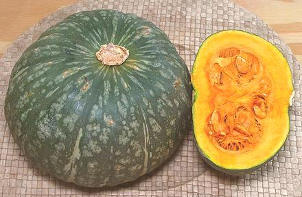

Kabocha Squash
[Japanese Pumpkin (Australia / New Zealand); Auyama (Spanish); Fak Thong
(Thai); Danhobak (Korea); Cambodia Abóbora (Portugal); Kabocha,
Bobora (Japan); Red Pumpkin (India); Cucurbita maxima]
This excellent winter squash is the one to use when a recipe calls for
"Pumpkin". While all squash originated in the Americas, this one was
taken to Japan from Cambodia by Portuguese sailors. "Kabocha" is a
Japanese corruption of "Cambodia". They may have come to Cambodia from
India where closely related "pumpkins" are very popular, and those probably
came from the Portuguese.
Though Kabocha is C. maxima, while West Indian Pumpkin (Auyama)
is C. moschata, it is considered a fine substitute for that squash.
It is the same shape with almost exactly the same internal color, flavor
and cooking properties.
Kabocha may range from 1-1/2 to 8 pounds, but average around 2-1/2 pounds
in markets here in Los Angeles. Farms in California started growing them
for export to Japan, but the Japanese only wanted the largest ones, so
the smaller were sold in Los Angeles. Soon they were grown by many farms
(seeds come with every squash) and are now one of the most common squash
here in the Southland. Eventually, the Japanese decided the smaller ones
were better, but had to keep taking big ones, as the small ones were all
being sold here.
Today, these squash are grown as far afield as South Africa, Tasmania
and Chile. Most of the crop from California, Colorado, Tonga and New
Zealand is exported to Japan. This I have to say; given the tonnage
in markets here in California, if most of our crop goes to Japan,
that's one huge pile of squash.
The larger of the photo specimens was 6-1/2 inches diameter, 4 inches
high and weighed 3-1/4 pounds. The smaller was 5-1/4 inches diameter,
3-1/2 inches high and weighed 1-1/2 pounds.
More on Squash.
Once aged (see "Growing") Kabocha flesh is very sweet and intensely
orange. It is even tasty eaten raw.
Cooking:
In Japan, this squash is often used for
Nimono, simmered in a stock of dashi, soy sauce and sake until
tender and the stock has simmered down. It is also much used for
vegetable tempura. This is a prime squash for soups and stews, and for
recipes that call for "Pumpkin", whatever nationality the recipe may
be. It holds its shape well in cooking and has excellent favor. It may
also be oven roasted like Acorn Squash. In Jamaica, it is used in
Chicken Foot Soup.
Note that when doing ethnic recipes where "pumpkin" presumes a local
type, as it always does, you may have to add a little water to the recipe.
Our Kabochas, having been aged for months to improve flavor and texture,
have rather dry flesh. If the recipe calls for sweating the pumpkin in
it's own juices, you will have to add a little water.
Growing:
These squash are easy to grow, but are rather
dry and bland at harvest. Once removed from the vine, they are stored in
a warm place (around 77°F) for 13 days while starches convert to
sugars. they are then moved to a cool place (around 50°F) for
another month, or as long as 2-1/2 months.
Buying:
Here in Southern California these are available
in practically every produce market and supermarket. They should be a
matt green color with light green spots and streaks (a patch of orange
won't hurt). They should be hard and heavy for their size, and without
bruises. The stems should be dry and shriveled, showing they have been
aged. Here in Los Angeles, produce markets usually charge about 2016
US $0.98 / pound, but the photo specimens were purchased from a large
Asian market in San Gabriel for $0.69 / pound.
Storing:
They'll keep in a cool dry place for a couple
of weeks. Once cut they should be refrigerated and used
within a few days.
Peeling & Prep:
The best way to peel this
squash is with a "Y" shaped vegetable peeler going around the squash
not up and down. The skin is thin and edible, so you don't
need peel deep, or peel it at all except for color. The best way to cut this
rather hard squash is to place it on the cutting board, position a razor
sharp Chinese cleaver knife on it, and drive it through with a soft faced
mallet (see Chinese Cleaver Knife &
Mallet).
sq_kabochz 160416 - www.clovegarden.com
©Andrew Grygus - agryg@aaxnet.com - Linking to and
non-commercial use of this page is permitted.